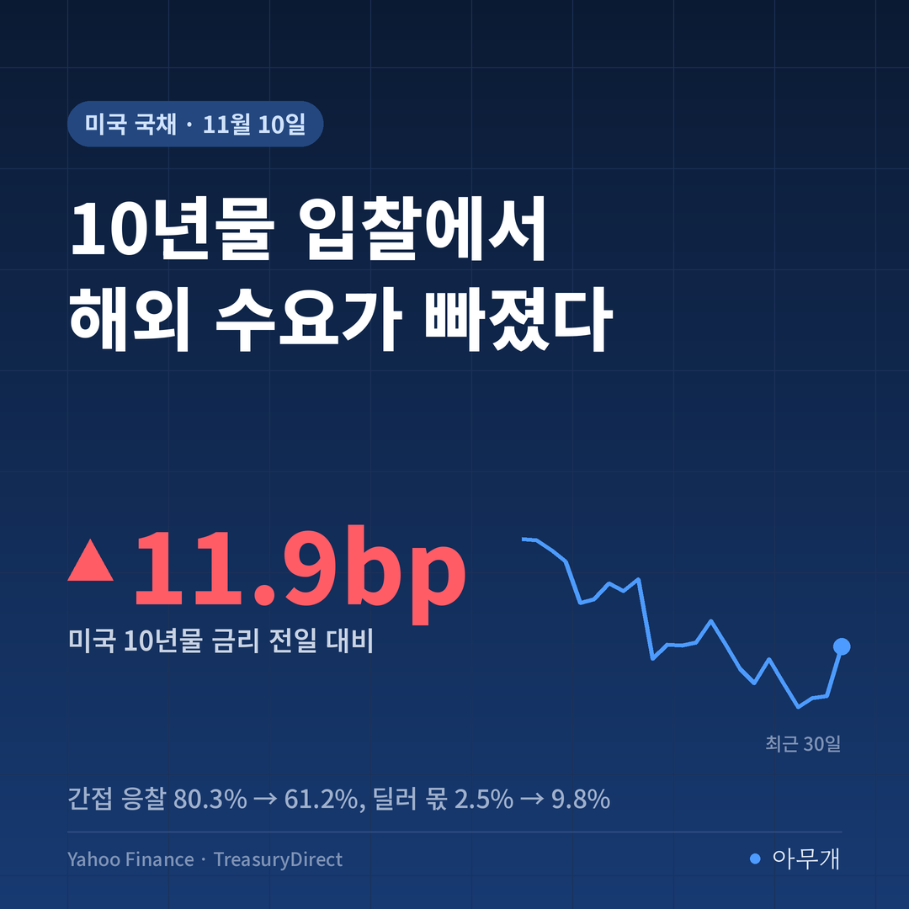
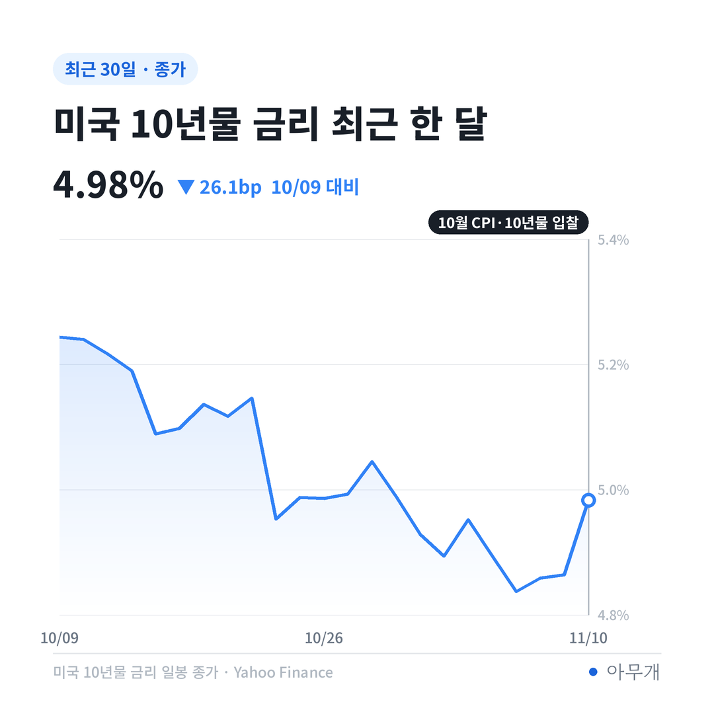
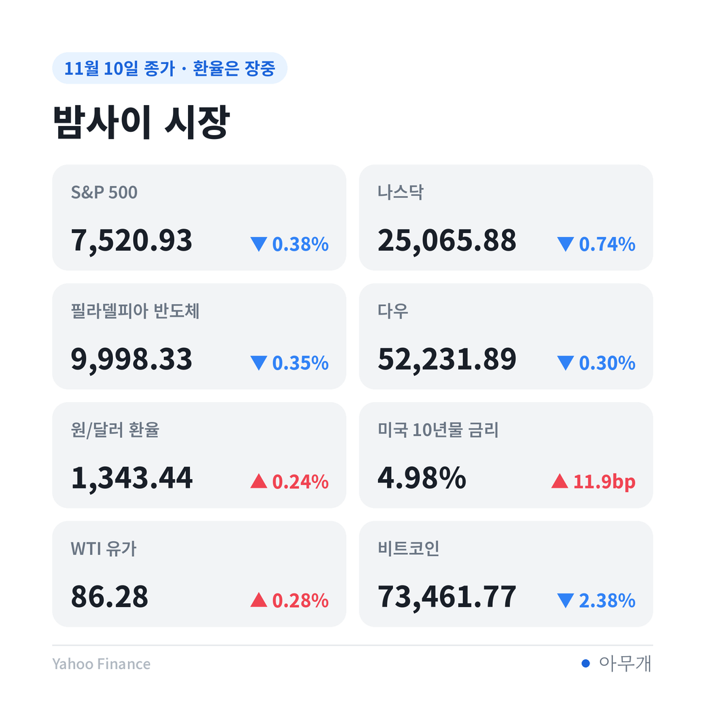
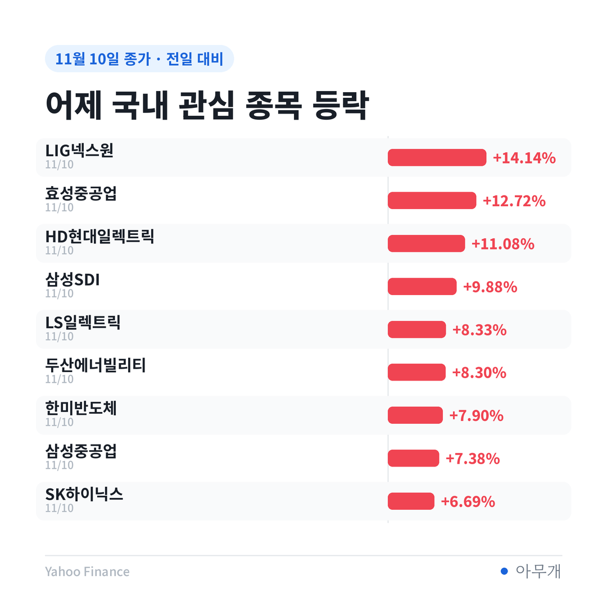

📷 사진 1 자리
물가 0.4%, 숫자 안을 열어 보면
미국 노동통계국이 10일(현지시간) 내놓은 10월 CPI는 전월보다 0.4% 올랐어요[1]. 9월 0.6%보다는 낮지만 시장 전망 0.3%보다는 높았죠[1][2]. 식품·에너지를 뺀 근원 CPI도 0.3% 올라 전망치 0.2%를 넘었어요[1][3].
| 항목 | 10월 전월 대비 | 함께 볼 숫자 |
|---|---|---|
| 전체 CPI | +0.4%[1] | 전망 0.3%, 9월 0.6%[1] |
| 근원 CPI | +0.3%[1] | 전망 0.2%, 9월도 0.3%[1] |
| 주거비 | +0.3%[1] | 전체 상승분의 30% 이상 차지[1] |
| 식품 | +0.5%[1] | |
| 에너지 | +0.7%[1] | 휘발유 +1.0%, 9월 에너지는 +5.2%[1] |
근원 0.3%라는 숫자가 하필 문제였어요. 월러 이사가 발표 몇 시간 전 런던 연설에서 "근원 물가가 0.3% 안팎이거나 그 이상이면 12월 0.5%포인트 인상을 고려해야 한다"고 기준선을 그어 뒀거든요[3]. 발표된 숫자가 그 선에 정확히 닿았습니다.
이번 발표엔 빠진 게 하나 있어요. 전년 같은 달과 비교한 상승률이 나오지 않았습니다[1]. 지난해 10월 연방정부 셧다운(일시 업무 정지)으로 그때 가격 조사를 못 했기 때문이에요[1]. 1년 치 흐름을 볼 수 없으니 시장은 한 달 치 숫자에 더 크게 흔들릴 수밖에 없는 구조죠.
10년물 금리가 5%를 넘본 게 처음은 아니에요. 10월에는 10년물과 30년물 금리가 24년 만의 최고치를 찍었고, 이달 초에도 10년물이 5% 위에서 거래된 적이 있어요[4]. 한 달 전 10월 7일 10년물 종가는 5.277%였습니다. 그때보다 금리 수준은 낮은데, 이번 입찰 수요는 오히려 약했다는 점이 이번 숫자의 핵심이에요.
확인된 숫자와 아직 말뿐인 것
| 구분 | 내용 |
|---|---|
| ✅ 발표된 숫자 | 10월 CPI +0.4%, 근원 +0.3%[1][2] |
| ✅ 발표된 숫자 | 10년물 국채 입찰 낙찰 금리 5.020%, 응찰률 2.46배[7] |
| 🗣️ 연준 인사 발언 | 월러 이사 "물가가 꺾이지 않으면 12월 0.5%포인트 인상 고려"[2][3] |
| 🗣️ 연준 인사 발언 | 로건 댈러스 연은 총재 "최소 두 차례 0.25%포인트 인상이 필요"[2][3] |
| ⚠️ 시장 확률 | CME 페드워치 12월 인상 확률 전날 84.0% → 100%, 그중 0.5%포인트 인상 11.5%[2][3] |
현재 미국 기준금리는 연 3.75~4.00%예요[3]. 12월 인상은 시장이 거의 기정사실로 보고 있고, 남은 질문은 폭이라는 게 월가 운용사들의 설명입니다[2]. 다만 아직 연준의 결정이 아니라 위원 개인의 발언과 선물 시장의 확률이라는 점은 구분해 둘 필요가 있어요.
입찰표 한 장이 말해 주는 해외 수요
같은 날 미국 재무부는 10년물 국채를 팔았어요. 기사에선 '다소 부진'이라는 한 줄로 지나갔지만[4], 입찰 결과를 직전 10년물 입찰과 나란히 놓으면 달라진 게 분명히 보입니다.
📷 사진 2 자리
| 항목 | 11월 10일 | 10월 7일(직전) |
|---|---|---|
| 발행 규모 | 420억 달러[7] | 390억 달러[7] |
| 낙찰 금리 | 5.020% | 5.300% |
| 응찰률 | 2.46배 | 2.77배 |
| 해외 등 간접 응찰 | 61.2% | 80.3% |
| 미국 기관 등 직접 응찰 | 29.0% | 17.1% |
| 딜러가 떠안은 몫 | 9.8% | 2.5% |
간접 응찰은 해외 중앙은행·기관이 주로 들어오는 창구예요. 이 비중이 80.3%에서 61.2%로 내려왔고, 팔리지 않은 물량을 떠안는 딜러 몫은 9.8%로 커졌어요. 딜러 몫이 10% 수준이면 5월 이후 가장 많다는 시장 평가도 나왔습니다[4].
금액으로 바꾸면 더 또렷해요. 이번 간접 응찰 몫은 420억 달러 × 61.2% ≈ 257억 달러, 지난달은 390억 달러 × 80.3% ≈ 313억 달러예요. 발행은 30억 달러 늘었는데 해외 등 간접 몫은 56억 달러가량 줄어든 셈이죠. 딜러가 떠안은 금액은 약 10억 달러에서 약 41억 달러로 네 배 가까이 됐어요.
입찰 전부터 국채가 많이 팔리던 분위기였고, 결과가 나온 뒤 금리가 조금 더 올랐다는 게 BMO 이코노미스트들의 평가예요[4]. 낙찰 금리 5.020%도 그날 10년물 종가 4.983%보다 높았습니다.
금리가 오르자 주식은 어디서 빠졌나
10일 뉴욕 3대 지수는 모두 내렸어요. S&P 500은 0.38%, 나스닥은 0.74%, 다우는 0.30% 하락했습니다.
📷 사진 3 자리
| 지표 | 종가 | 전일 대비 |
|---|---|---|
| 미국 10년물 금리 | 4.983% | +11.9bp |
| 미국 30년물 금리 | 5.350% | +9.4bp |
| 나스닥 | 25,065.88 | -0.74% |
| 필라델피아 반도체 | 9,998.33 | -0.35% |
| 엔비디아 | 168.89달러 | -5.47% |
| 마이크로소프트 | 533.16달러 | -2.20% |
| 원/달러 환율(장중) | 1,343.44원 | +0.24% |
| 달러인덱스(장중) | 102.23 | +0.57% |
채권 쪽에서 먼저 볼 건 2년물이에요. 기준금리 기대를 가장 빨리 반영하는 2년물 금리는 17bp 넘게 올라 4.73%가 됐어요[2][4]. 10년물(+11.9bp)보다 단기 금리가 더 뛰었다는 건, 이번 충격의 중심이 '먼 미래 걱정'보다 '다음 달 금리 인상'이라는 뜻으로 읽혀요.
주식은 업종마다 달랐어요. 반도체지수는 0.35% 내려 나스닥보다 덜 빠졌고, TSMC는 2.02%, AMD는 1.30% 올랐습니다. 엔비디아의 5.47% 하락에는 금리보다 젠슨 황 관련 조사와 대중국 수출 규제 우려가 더 크게 작용했다는 분석이에요[2]. 마이크로소프트는 경쟁사의 새 AI 오피스 출시 소식이 겹쳤고요[2].
내 대출과 환전, 국내 주식에는
미국 10년물 금리는 주택담보대출(모기지)·자동차 대출·카드 금리의 기준 역할을 해요[4]. 미국 30년 고정 모기지 평균 금리는 7.3% 수준입니다[5]. 미국 금리가 다시 5%를 넘보면 미국 내 대출 금리도 쉽게 내려오기 어려운 구조예요.
환율도 같은 줄에 묶여 있어요. 10일 서울 외환시장 환율은 1,337.5원으로 하루 9.6원 내렸지만[6], 밤사이 물가 발표 뒤 달러가 강해지면서 장중 1,343.44원으로 다시 올라왔어요. 1,000달러를 바꾼다면 서울 마감 기준 133만 7,500원이 장중 기준 134만 3,440원이 되는 셈이니 약 5,940원 차이예요[6]. 미국 금리 인상 기대가 강해질수록 환율을 위로 미는 재료가 됩니다.
어제(10일) 국내 증시는 반대로 크게 올랐어요. 코스피는 4.39%, SK하이닉스는 6.69%, 삼성전자는 4.74% 올라 마감했습니다. 그런데 밤사이 뉴욕에서 SK하이닉스 미국주식예탁증서(ADR)는 3.51% 내렸어요[2]. 오늘 국내 장은 이 금리 숫자를 처음 반영하는 날이에요.
📷 사진 4 자리
12월 FOMC 전까지 그려 볼 장면
| 시나리오 | 무엇을 보면 되나 | 예상되는 영향 |
|---|---|---|
| 물가 재확인 | 13일(금) 미국 생산자물가(PPI)도 예상을 웃도는지[4] | 0.5%포인트 인상 확률이 커지고 2년물·달러 강세, 성장주 부담 |
| 입찰 수요 회복 | 12일(목) 30년물 입찰 250억 달러[7]에서 간접 비중이 다시 높아지는지 | 장기 금리가 5% 아래에서 안정, 기술주 숨 고르기 |
| 수요 약세 이어짐 | 30년물 입찰에서도 딜러 몫이 커지는지 | 10년물 5% 위 고착 가능성, 원/달러 환율 상승 압력 |
이번 주에 더 오래 남을 숫자는 CPI보다 입찰표라고 봐요. 물가는 다음 달 숫자로 다시 바뀌지만, 해외 큰손이 미국 국채를 덜 사기 시작한 거라면 연준이 금리를 얼마나 올리든 장기 금리가 쉽게 내려오지 않을 수 있어요. 그래서 목요일 30년물 입찰의 간접 응찰 비중이 다음 확인 지점이에요.
✍️ 직접 보거나 들은 경험이 있으면 위 문단에 한두 줄 덧붙이세요 (이 안내 줄은 지우기)
반대로 볼 근거도 있어요. 지난달 10년물은 기존 물량을 다시 파는 재발행 입찰이라 이번과 바로 비교하기엔 조건이 달랐어요. 간접 몫이 줄어든 만큼 직접 응찰이 17.1%에서 29.0%로 늘어 미국 내 기관이 빈자리를 메웠다고 볼 수도 있고요. 하루 전 3년물 입찰의 간접 비중은 55.5%로 지난달 57.6%와 큰 차이가 없었습니다.
목요일·금요일 달력에 적어 둘 것
참고한 기사
이 글은 정보 제공 목적이며 투자 권유가 아닙니다. 투자 판단과 책임은 본인에게 있습니다.
시장 수치: Yahoo Finance 종가 기준(환율·달러인덱스는 11일 08시 장중), 국채 입찰: 미국 재무부 TreasuryDirect



